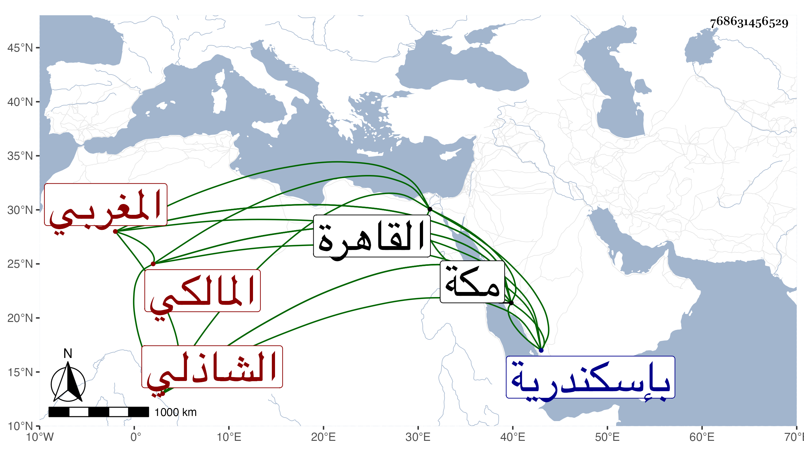

0902Sakhawi.DawLamic.ITO20230111-ara1.EIS1600.768631456529
Biography ID: 768631456529
1036
يحيى بن محمد بن يحيى بن أحمد بن علي المغربي الشاذلي المالكي . نزيل مكة وجد يحيى بن علي بن أحمد الماضي لأمه . ولد في ربيع الآخر سنة إحدى وسبعين وسبعمائة بإسكندرية وكان بالقاهرة سنة تسع عشرة وثمانمائة . ومات بمكة في صبح يوم السبت خامس عشرى شعبان سنة ست وأربعين . وكان صالحا معتقدا فيه فضيلة وهو ممن عرض عليه ابن أبي اليمن رحمه الله .
